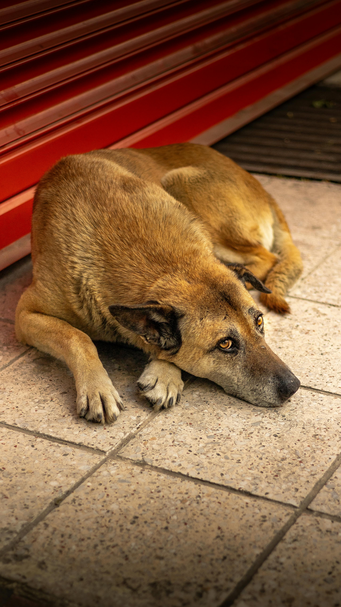
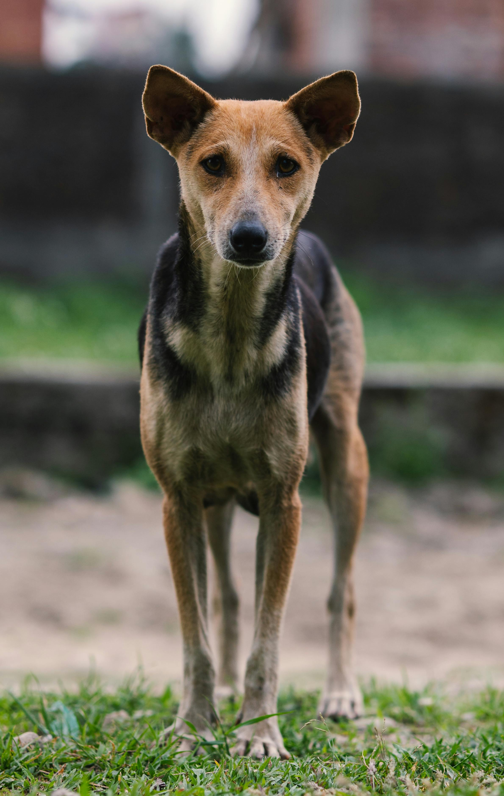
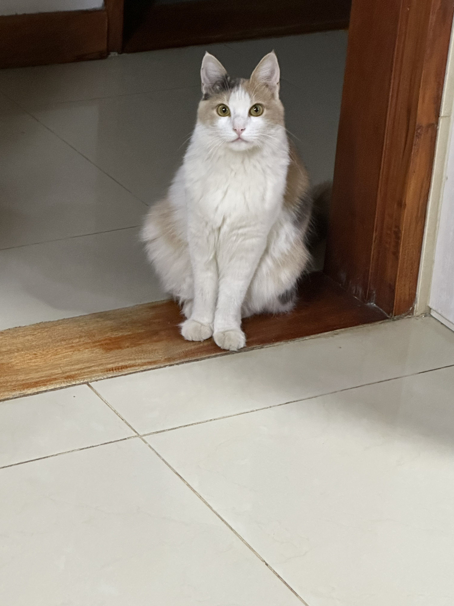

¡Mascotas disponibles para adopción!

Luna
Edad: 3 años
Luna fue encontrada atada a un poste en pleno invierno, sin agua ni comida. Cuando llegó al refugio estaba asustada y temblaba, pero con paciencia fue abriendo su corazón de a poco. Hoy es una perra juguetona que adora los abrazos y no se separa de las personas.
.jpg)
Teo
Edad: 2 años
Teo apareció en la puerta del refugio una mañana lluviosa, solito y empapado. Nadie supo cómo llegó hasta ahí, pero parece que él sabía exactamente a dónde tenía que ir. Es curioso, alegre y siempre encuentra la forma de arrancarte una sonrisa.

Sam
Edad: 4 años
Sam vivía en una casa donde su familia tuvo que mudarse al exterior y no pudieron llevárselo. Es un perro tranquilo, muy inteligente y fiel. Ya sabe varios comandos y lo único que busca es una familia a la que cuidar y que lo cuide a él.

Rowena
Edad: 4 años
Rowena llegó al refugio después de que su dueña falleció y ningún familiar pudo quedarse con ella. Es serena y muy inteligente. Cuando te gana la confianza, se acurruca a tu lado sin hacer ruido. Busca un hogar tranquilo donde pueda sentirse segura de nuevo.